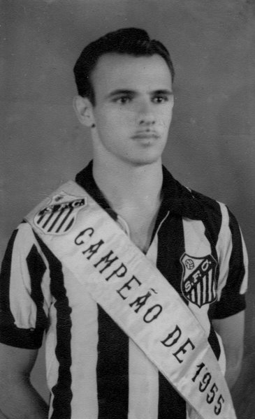

O Santos Futebol Clube foi fundado em 14 de abril de 1912 por Francisco Raymundo Marques, Mário Ferraz de Campos e Argemiro de Souza Júnior. A reunião inaugural ocorreu na sede do Clube Concórdia, em Santos, e contou com a presença de 39 sócios-fundadores. O nome sugerido foi "Santos Foot-Ball Club", e as primeiras cores do uniforme eram azul e branco, com fios dourados. Em 1913, o clube conquistou seu primeiro título importante, o Campeonato Santista, e, em 1927, destacou-se com um ataque histórico conhecido como "Ataque dos 100 gols". O primeiro Campeonato Paulista foi conquistado em 1935, e nos anos 1950 o clube já contava com Pelé, que se tornaria um ícone mundial. Na "Década de Ouro" (1960), o Santos brilhou internacionalmente, vencendo títulos como Camp~eao Mundial em 1962 e Bicampeonato Mundial em 1963; sendo considerado pela FIFA o "melhor time do século nas Américas". O clube é octacampeão brasileiro, com 22 títulos paulistas, 3 Taças Libertadores e 2 Mundiais Interclubes. Com 111 anos de história, o Santos é conhecido por revelar grandes jogadores, e segue sendo motivo de orgulho para seus torcedores.
Escudos

Em 1915, o Santos FC adotou o pseudônimo de União FC, para poder disputar o Campeonato Santista. Com a nova nomenclatura, surgiu um novo escudo, e o time santista utilizou provisoriamente no ano de 1915.

No início da década 40, mais precisamente no ano de 1942, foi criado um novo escudo, com as letras SFC entrelaçadas em um fundo branco. O escudo foi utilizado até 1944.

O emblema atual surgiu em 1925. As estrelas acima do escudo, foram inseridas em 1968, representando as conquistas do Bicampeonato Mundial de 1962-1963. Antes de 1925, o Santos FC não utilizava distintivo nas camisas.
Grandes Ídolos
Pelé
Pepe
Lima

Zito
Notícias
Decisivo contra o Vila Nova, Otero projeta reta final da Série B: “100% concentrados”
06/11/2024
Ídolos Eternos visitam o Instituto Neymar Júnior
06/11/2024
No CT Rei Pelé, Santos FC confirma classificações às semifinais dos estaduais Sub-13 e Sub-14
03/11/2024
Santos FC e SBU-SP se unem novamente em campanha do Novembro Azul
03/11/2024
Sereinhas da Vila eliminam Audax fora de casa e estão nas semifinais da Paulista Cup Sub-15
07/11/2024
Santos FC recebe o Programa Excelência Experience da FPF
02/11/2024